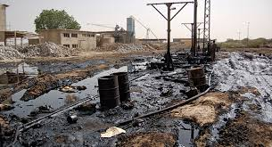
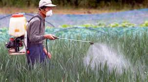

Tipos de contaminación
Contaminación del Agua

Tipo de contaminación que supone la contaminación distintos cuerpos de agua. Varias criaturas acuáticas dependen de estos cuerpos de agua y sus características naturales nutritivos para apoyar su vida.
Contaminacion del Aire

Se denomina a la adición de elementos tóxicos como el CO. Este tipo de contaminación afecta al bienestar de las personas, animales y plantas de forma negativa.
Contaminacion Suelo

Cuando se introduce material extraño y dañino en las capas terrestres. Estos contaminantes producen un desequilibrio físico, químico y biológico en el suelo.
Contaminacion Visual

Es todo aquello que afecta o perturba la visualización de una determinada zona o rompe la estética del paisaje.
CXontaminacion Quimica

Es la alteración nociva del estado natural de un medio como consecuencia de la introducción de un agente totalmente ajeno a ese medio (contaminante), causando inestabilidad, desorden, daño o malestar en un ecosistema, en el medio físico o en un ser vivo.
Contaminacion Atmosferica
Es la presencia en la atmósfera de sustancias en una cantidad que implique molestias o riesgo para la salud de las personas y los demás seres vivos
Contaminacion Acustica
hace referencia al ruido (entendido como sonido excesivo y molesto), provocado por las actividades humanas (tráfico, industrias, locales de ocio, aviones, etc.), que produce efectos negativos sobre la salud auditiva, física y mental de los seres vivos.
Consecuencias de la contaminacón
Calentamiento global
Se refieren al aumento observado en los últimos siglos de la temperatura del sistema climático de la Tierra y sus efectos.
Problemas para la salud
La contaminación hace que las personas estemos cada vez más expuestas a padecer problemas cardiovasculares, con el grave peligro que esto entraña para nuestra salud y vida.
Debilitamiento de la capa de ozono
Esto no solo hace que cada vez haya más zonas desiertas en las que es imposible vivir, sino que también hace que el hielo en los polos se deshaga y mueran muchas especies por ello.
Contaminación que afecta al suelo y al agua
La contaminación al medio ambiente afecta al agua y al suelo, lo que hace que cada vez haya más especies en peligro de extinción. El agua no es potable en una gran cantidad de sitios y el suelo para la siembre no tiene los nutrientes necesarios, lo que hace que cada vez se pueda cultivar menos y que el número de cosechas para nuestro sustento sea cada vez menor.
Contaminación que afecta al clima
Todos estos cambios y los fenómenos que no se habían visto desde hace mucho tiempo o incluso nunca se habían visto son causados por la contaminación.
Aplicacion Tres, JBC
Metodo de las 3R
Reducir
Es la acción de Reducir la basura que generamos a diario.
Reciclar
Implica cualquier proceso o tratamiento que se le de a los desperdicios domésticos transformándolos en nuevos materiales utilizables.
Reutilizar
Trata de usar al máximo posible los elementos, así contribuís a que disminuya considerablemente el impacto contra el Medio Ambiente.
Aplicacion Tres, JBC


 1
1 4
4